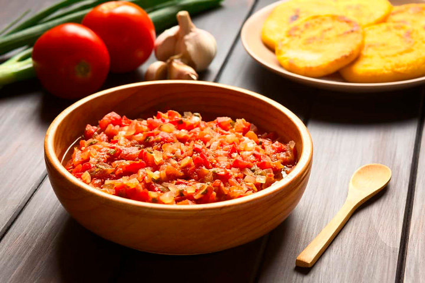

Hogao
Go to Hogao Recipe
Author: Laura Duran
The Colombian hogao is a salty salsa and constitutes the basis of many of the typical foods of this country. It is made from tomato and onion long and white, and is widely used as a sofrito for many Colombian recipes, also as a sauce and dressing of some entrees or appetizers, adding a little cumin, oregano or achiote, this depends on the person or house in which they are made.
Time: 30 minutes - Difficulty: Medium - 488Kal
Ingredients
- 200 grams of long onion
- 4 units of Red Tomatoes
- 1 unit of white onion
- 1 pinch of garlic paste
- 1 pinch of cumin
- 1 pinch of salt
- 1 pinch of pepper
Steps
-
Cut the onion
Cut the onion to make the hogao, cut them very little for them tu cuook better
-
Cook the onions
Bring a pan over medium heat and add a tablespoon of sunflower oil. Once hot, add the onion and white onion also finely chopped
-
Add the seasonings
Add salt and pepper to taste and distribute the onion pieces throughout the pan to make the Colombian hogao.
-
Add the resting ingredients
Once you notice that the onion takes a transparent color, add the tomato cut into small squares and leave to sauté for a few minutes. Add garlic paste and cumin to taste, this will give a special touch to our colombian salsa
-
Start Frying
Immediately fry the cheese-filled banana in oil at medium temperature until golden brown, about 5 minutes. When ready, pass through absorbent paper to remove excess fat.
-
Check the consistency
When the hogao has the desired consistency, we put out the fire and it will be ready to consume.